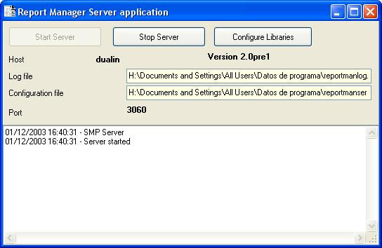

The report server can run in the background or as a visible application, for initial testing purposes and better monitoring you can execute reportserverapp executable. For multiprocessing support remember that printreptopdf command line tool is used and must be available in the same directory as the server.

You can configure report libraries clicking the Configure Libraries button.
See also Server configuration and Server installation